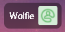
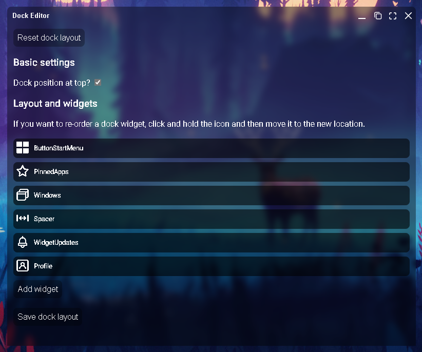
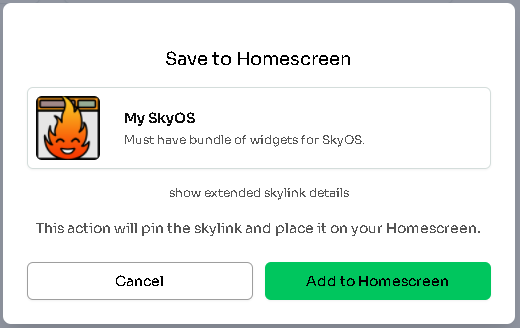
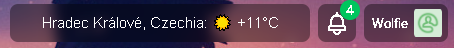
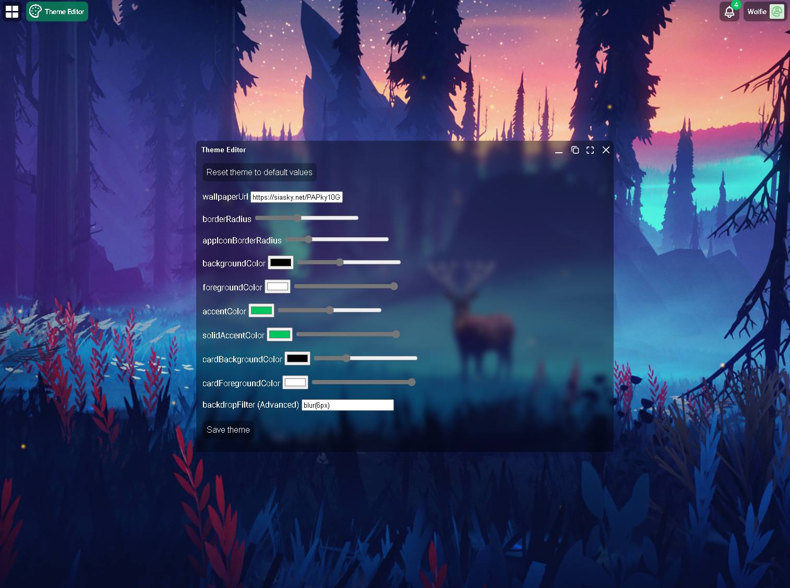

SkyOS - System in a browser#
This might be my personal opinion but one of the most amazing Skapps made so far is SkyOS. It is being developed by redsolver and it is special kind of app for me since I was talking with him how much I would love to use such kind of app. Few days later, he surprised me with a working prototype.
Since then, SkyOS became much more: - it supports Homescreen, so it is accessing your personal copies of the apps stored in your MySky space - it supports Themes, so you can customize the look in a way you like - it loads profile data from your public profile (skyprofile.hns.siasky.net) - it supports Widgets, so app creators can make custom widgets for the Dock
...and other cool stuff with even more stuff in the works.
One very interesting Widget was made by author of
Inception Browseravailable at webception.hns.siasky.net. You can not only use the app itself inside SkyOS and literally browse content in a browser inside a browser inside a browser inside your main browser's tab. It has also Widget that lets you search stuff and open it in a new window inside SkyOS.It might sounds as minor thing, but these features can go way further. I will give you an example... today, when you use your browser (Like Chrome), bookmarks, address bar, status panel and many other things are all part of the single window. But with Skynet and system like SkyOS, you could have all of the controls separated to different window, screen or completely different device. And it would control just one app inside SkyOS but any other that adds support. SkyOS Widgets would be just listening for those requests and execute them. I think we are not far from a point where you could have a library with favorite movies of your kids, launch SkyOS on your TV in a browser and then have each of your kids and yourself have different (generated) playlists as a web page that you make accessible via icon on their device's desktop and when some content gets selected, it send instructions for you TV to play it. This all inside a browser with no installation or technical skills required.
Starting with SkyOS - Your public profile#
- Start by opening sky-os.hns.siasky.net and click the
Profilebutton in top right corner and thenEdit Profile.
You can also edit your profile directly by visiting directly the app that works with your profile data: skyprofile.hns.siasky.net.

- Edit your profile and
Save Changes. The change won't be visible right away, you need to reload the app (F5 in most browsers). After you do so, you will see that your profile name is now updated.

Adding new Apps#
This is done purely through Homescreen. Check out the previous article to learn how to add apps and continue the following article to know which apps to add. Of course, nothing stops you from using those apps without Homescreen & SkyOS at all. Thanks to Homescreen, many other users will have personal copies of the apps, so even if your popular apps changes and you won't like it, you should be able to find users sharing the older version.
Dock Editor & Widgets#
Some of the apps you add can via Homescreen support SkyOS Widgets (if the developer added it) and some apps are just widgets alone. What does it mean? Widget is app that follows specific standard defined by SkyOS and loads as an iframe in dock inside SkyOS. Widgets can be simple ones for date, weather, battery level, crypto price, but also more complex that help you control apps they are part of to control your playlists, make quick access to making posts, notify you about news and more. It's kind of a notification center on steroids:) And as SkyOS keeps adding features, it can be expected that Widgets will become very powerful tool for SkyOS users.
I will give you two examples.
Webception(mentioned at beginning of article) has SkyOS Widget bundled inside the app so it is both App & Widget. After adding the app to your Homescreen, just open SkyOS (reload it if you had it already open) and click your profile and thenDock Editor. Continue by clickingAdd Widgetand select the Widget you want to add (Webception). Don't forget to save your new dock withSave dock layout, else the next time you reload/open SkyOS, you will still see your old dock.

MySkyOSis Widget-only that I am personally working on withSteven1and assistance ofredsolver. Currently it features only two widgets forWeather(Danger) andDate(Steven1) but the plan is to create entire set of useful widgets and also make a tutorial for others. You can add this widget through Homescreen by searchingmyskyosor myskyos.hns.siasky.net. Notice that if you try to open this link in browser, it will show you page telling you that this app doesn't do anything on its own. It needs SkyOS to load. Instead, just continue to Homescreen and add it there as you see on image below. Then reload SkyOS and add it to the dock the same way as in first example. The image below it shows you how it will look if you add theWeatherwidget.


Customizing Themes#
Under your profile and Theme Editor, set of sliders and fields allows you to modify the appearance of your SkyOS. Custom wallapaper (just upload it with any other Skynet app and then enter the skylink here), border radius, colors, all is here.

What's next?#
You are now able to update your profile, customize Theme, add Apps and Widgets. Just keep in mind that this profile is not part of SkyOS, instead it is separate app that allows you to write data that other apps (like SkyOS, Rift and other) can read and display. Skynet is all about YOUR data and the apps, widgets or other components are just ways to access it. Possibilities are endless.
Let's continue to the next article and check out some apps.
Written by: Danger, Last Edit: October 27, 2021